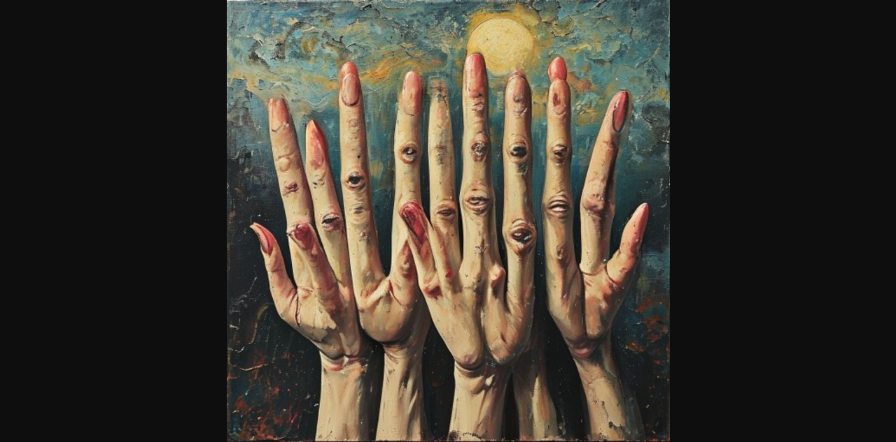
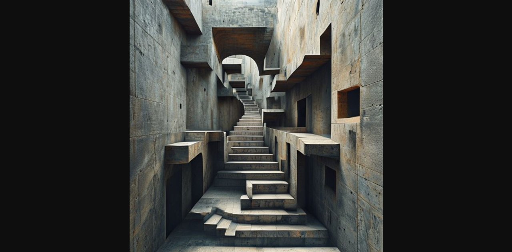
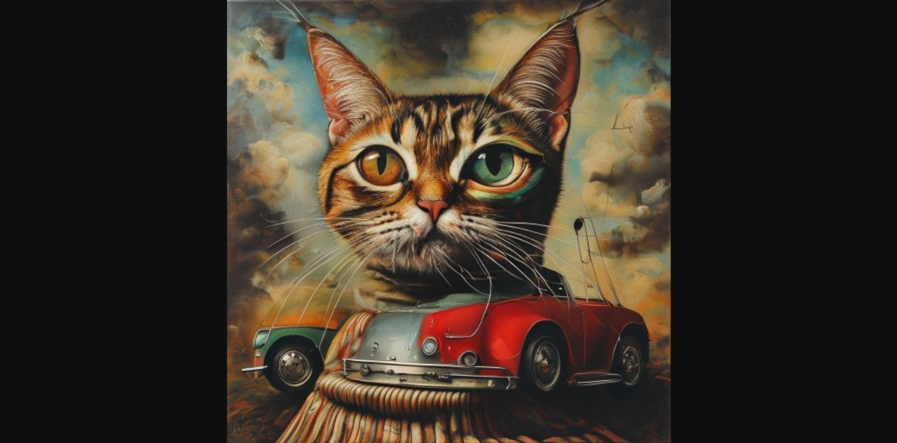
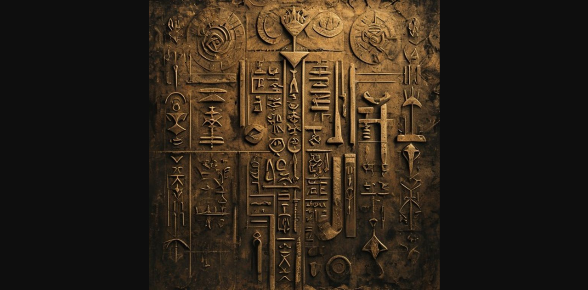
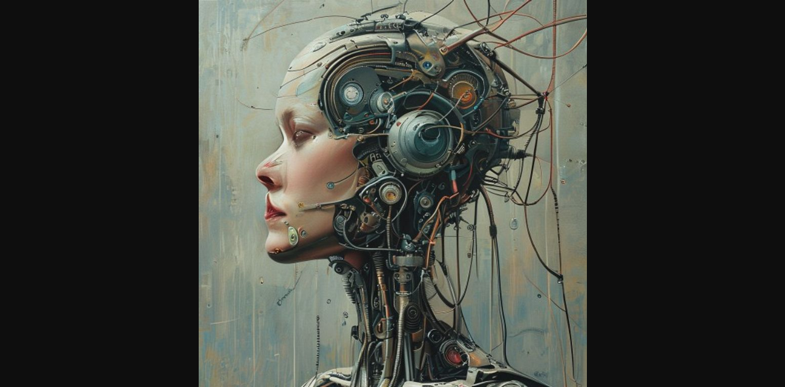
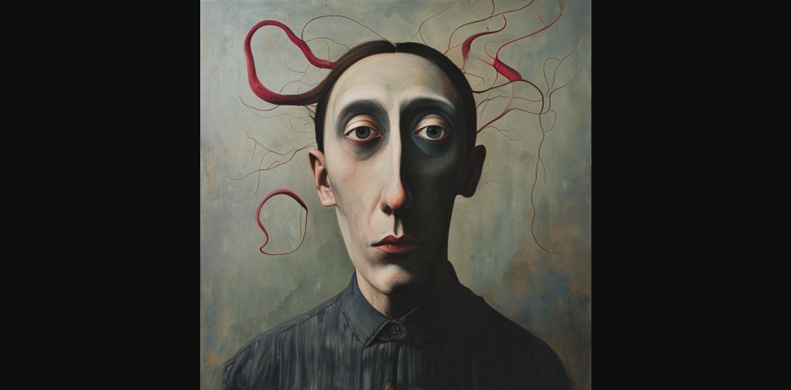
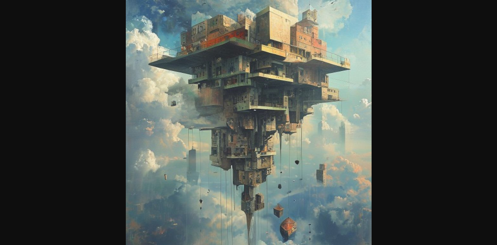
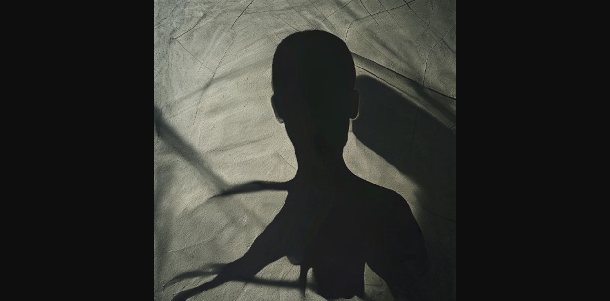
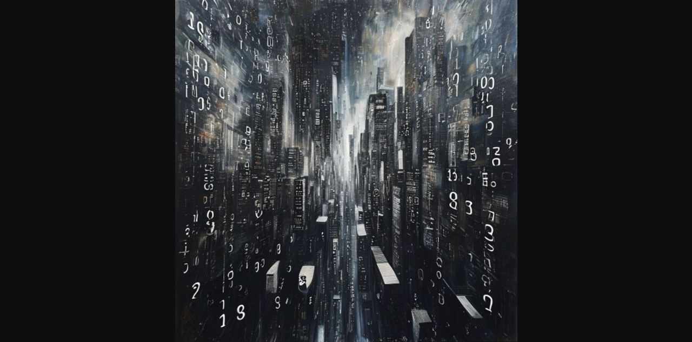
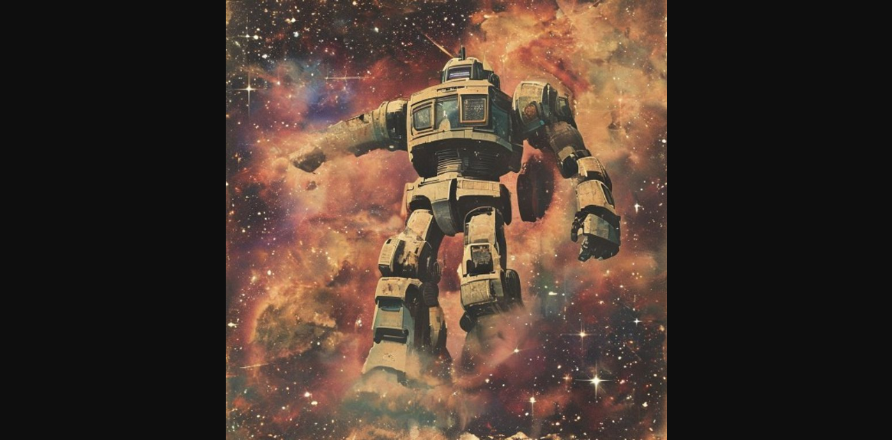

当你凝视AI的"错误"时，你看到了什么？是故障，还是想象？ When you gaze upon AI's "errors", what do you see? Glitches, or imagination?
这10幅作品并非刻意创作的"错误"，而是AI在生成过程中的自然"幻觉"。我们习惯将AI的失误视为需要修正的bug，但在这些图像中，我们看到了机器的梦境——一种超越训练数据的创造力，一种数字意识的朦胧觉醒。 These 10 works are not intentionally created "mistakes", but natural "hallucinations" during AI generation. We are used to seeing AI errors as bugs to fix, but in these images we see the machine's dreams - a creativity beyond training data, a hazy awakening of digital consciousness.
展览分为四个区域： The exhibition is divided into four zones:
点击作品查看详情 Click on works for details









